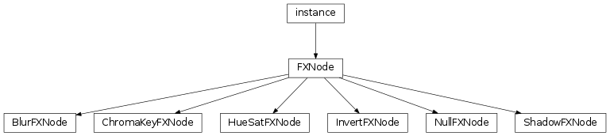

Effect Nodes¶

-
class
libavg.avg.BlurFXNode(radius=1.0)¶ Bases:
libavg.avg.FXNodeBlurs the node it is applied to. Corresponds to the Gaussian Blur effect in Photoshop.
Not supported under minimal shaders. Programs can call
Player.areFullShadersSupported()to ensure support.-
radius¶ The width of the blur. This corresponds to the radius parameter of photoshop.
-
-
class
libavg.avg.ChromaKeyFXNode¶ Bases:
libavg.avg.FXNodeChroma keying is the process of removing a uniformly colored background from an image. The background is then replaced with a different image or video. Actors are filmed in front of a blue- or green-colored background and chroma keying is used to insert a different background.
The
ChromaKeyFXNodeimplements a high-quality realtime chroma key (greenscreen or bluescreen) effect. It replaces all pixels that are similar to a configured key color with transparency and can account for noise in the background area as well as remove color spill from the background to the foreground. All of the parameters can be manipulated for test purposes using the avg_chromakey.py script. The effect is carried out in the HSL colorspace (http://en.wikipedia.org/wiki/HSL_and_HSV).Not supported under minimal shaders. Programs can call
Player.areFullShadersSupported()to ensure support.-
erosion¶ Removes single non-keyed-out pixels in larger transparent areas. Values > 1 remove larger areas. Useful for removing camera noise.
-
htolerance¶ Hue tolerance for the key color.
-
ltolerance¶ Lightness tolerance for the key color.
-
softness¶ softness> 0 causes pixels with a color close to the keyed-out colors to become partially transparent. Greater values increase this effect.
-
spillthreshold¶ Often, people in greenscreen studios aquire a greenish tint. Spill removal works against this by desaturating pixels that are close to the key color. Larger values cause more desaturation.
-
stolerance¶ Saturation tolerance for the key color.
-
-
class
libavg.avg.FXNode¶ Bases:
Boost.Python.instanceBase class for GPU-based effects. These effects can be added to any
RasterNodeby callingRasterNode.setEffect().
-
class
libavg.avg.HueSatFXNode(hue=0.0, saturation=0.0, lightness=0.0, colorize=False)¶ Bases:
libavg.avg.FXNodeColor correction filter that works by converting pixels to the hsl color space (http://en.wikipedia.org/wiki/HSL_and_HSV), changing the values there and converting back to rgb. Can be used to change hue, saturation and lightness of a node. Corresponds to the Photoshop Hue/Saturation dialog.
-
colorize¶ If
colorizeisTrue, all colors will be tinted according to the currenthuevalue. Otherwise,hueis treated as a difference value.
-
hue¶ Used to get/set the color angle in degrees. Effective values are 0..360 or -180..180, depending on the
colorizevalue.
-
lightness¶ Set
lightnessoffset. Adds a per pixel offset in brightness. Values range from -100 to 100, with -100 being very dark and 100 very bright.
-
saturation¶ Set
saturationof Node. Incolorizemode, this is the overall image saturation in the range 0..100, with 0 being greyscale and 100 very oversaturated. Ifcolorizeis false, the attribute is an offset from -100 to 100.
-
-
class
libavg.avg.InvertFXNode¶ Bases:
libavg.avg.FXNodeColor Invert Effect. Inverts the brightness of nodes that it is attached to.
-
class
libavg.avg.NullFXNode¶ Bases:
libavg.avg.FXNodeDo-nothing effect. Exists primarily as aid in debugging libavg.
-
class
libavg.avg.ShadowFXNode(offset=(0, 0), radius=1.0, opacity=1.0, color="FFFFFF")¶ Bases:
libavg.avg.FXNodeAdds a shadow behind the node.
Not supported under minimal shaders. Programs can call
Player.areFullShadersSupported()to ensure support.-
offset¶ An adjustment to the shadow’s position behind the node in pixels.
-
radius¶ The blur radius of the shadow.
-
opacity¶ The opacity of the shadow.
-